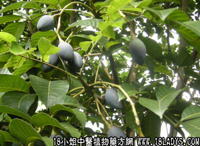

乌榄根(中药材植物名:乌榄)(植物科目:橄榄科)

植物名：乌榄。
生长环境：本品为常绿大乔木，种植于山地或村庄旁。
分布：广州常见果树，我国南部各地多有栽培，此外越南也有。
入药部分：根。
采集期：全年。
自采地点：家种。
性味：性平、味淡。
功能：舒筋活络、祛湿。
主治、用量和用法：1、脚痛：干用1至2两、猪脚一只、清水煎服；2、风湿脚气：用法同上；3、产后风瘫：干用2至两，猪脚一只（或鸡），清水煎后，冲酒服。
验方：（治寒湿脚气方）乌榄根1两、走马箭5钱、千斤拔5钱、山菩提5钱、臭屎茉莉头5钱、独脚球5钱、清水五碗，煎成一碗服。
（方解）本方山菩提，乌榄根舒筋活络，走马箭、臭屎茉莉头走下肢而利关节，千斤拔、独脚球祛寒湿而行气，入属寒湿脚气，服之有效。
（方歌）寒湿脚气莫须愁，乌榄根与独脚球，走马箭同千斤拔，舒筋活络还籍茉莉头。
附录：（叶）1、治疮疖疥癞：用鲜或干叶，煎水洗患处。2、治猪病疴黄屎：用干叶1斤、鸡蛋花4两、煎水开饲料食。
本文解释权归中药大全，本文地址：https://www.daquan.com/post/1528.html